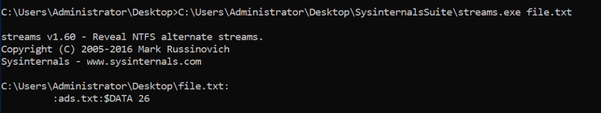
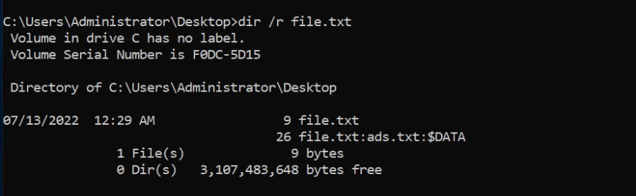
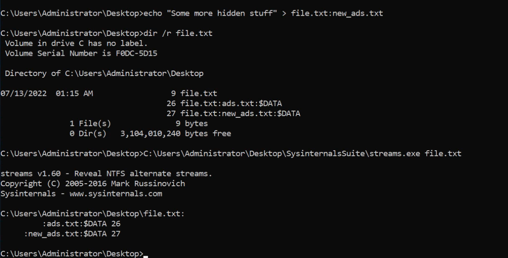

Alternate Data Streams
To View Alternate Data Streams:
1. Using sysinternal's stream command
streams <File_Name>

2. Using dir /r command
dir /r file.txt

To Read Contents of Alternate Data Streams:
1. Using CMD.exe
more < file.txt:ads.txt
2. Using Powershell
get-item .\file.txt | get-content -stream ads.txt
To create Alternate Data Streams:
echo "Some more hidden stuff" > file.txt:new_ads.txt
